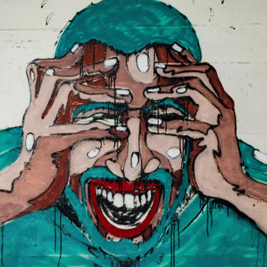
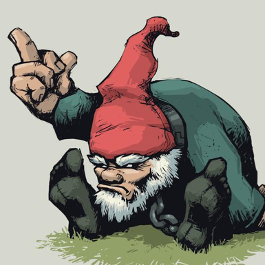
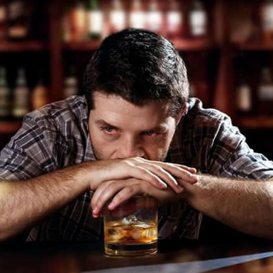

Ik sluip de bus uit. Kop in de kraag. Ik maak me klein en duw m’n zoon vooruit. Hij slaapt. Eindelijk. Zijn gejengel trok veel te veel aandacht. De mensen lopen over het stationsplein. Het voelt alsof er een grote, knipperende pijl boven m’n hoofd hangt: HIER LOOPT HIJ! Gelukkig is het kloteweer en kijken […]

Gefrustreerd
Ik stap uit die godverdomde stinkbus. De mensen krioelen als mieren over het stationsplein. Ik wil ze vertrappen onder m’n schoenen. Vermorzelen. Verbrijzelen. De klootzakken en kakkerlakken. Met hun nietszeggende leventjes en hun waardeloze gedachten. Ik duw een wagentje met mijn lieveling voort. Ik heb een dekentje over hem gelegd. Het ziet er niet uit […]

Kabouter Plop is boos
Kabouter Plop heeft te horen gekregen dat de TROS zijn programma niet meer wil uitzenden omdat het Commissariaat voor de Media te strenge eisen stelt. Samen met Kabouter Klus besluit hij om naar hun bazen te gaan, Samson en Gert. Die weten altijd wel raad. En dat blijkt!

Verassing
- ‘Biertje dan maar?’ – ‘Graag.’ – ‘Vermoeiende dag?’ – ‘Nah. Naar de bilbiotheek geweest. Met de bus.’ – ‘Gaat daar een bus naartoe?’ – ‘De bus stopt op het stationsplein.’ – ‘Ah. En vandaar moet je lopen?’ – ‘Ja, ik was met mijn zoon. Die sliep in zijn kinderwagen.’ – ‘Goed zo. Lekker wandelweer?’ […]